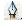

МАЛЮВАННЯ КРИВИМИ
Може бути ні для кого не буде це ні одкровенням, ні новиною, але чомусь виникає у мене відчуття, що знають про це не всі...
Отже, якщо вам навіщось знадобилося намалювати криву Безьє, визначимося з кількома моментами (крива формується з точок, кожна з яких має місцеположення [координати] і дві напрямних регулюючих кривизну "приходить" і "вихідної" кривий, що з'єднує цю точку з попередньою і подальшою відповідно), якщо напрямні утворюють розгорнутий кут (представляють єдиний відрізок) крива виходить "гладкою", якщо напрямні утворюють кут (відмінний від 180 °) то і в цій точці утворюється кут.
Йдемо далі. Проблемою всіх початківців є те, що при малюванні, окрім як "гладких" точок (або взагалі точок без напрямних) не виходить нічого. А їх потім необхідно преобразовавать, загалом (виникають думки про те, яка безглузда річ цей ілюстратор), хочу вас запевнити - це не так. перейдемо до справи.
Вибравши інструмент  приступимо до малювання. поставивши крапку не поспішайте отпускть кнопку миші - формуйте напрямні.
(якщо ви відмальовуєте растри, намагайтеся ставити крапки в місцях зміни кривизни лінії)
Перший важливий момент: якщо ви вважає, що невдало поставили крапку не поспішайте її прати, якщо ви не відпустили кнопку миші - натискайте пробіл і рухайте крапку в потрібне місце.
Другий важливий момент: якщо вам необхідно змінити точку з "гладкої" на "кут" - сформуйте "приходящу" направляючу, натискайте ALT (і не відпускаючи його - напрямні перестають бути пов'язаними) формуйте "витікаючу" напрямну.
І так далі...
Якщо вам необхідна замкнута фігура, ви повинні поєднати останню і першу точку (курсор змінить свій вигляд), при цьому - якщо при побудові першої точки ви не використовували ALT - вона буде "гладкою".
Враховуйте це при створенні першої точки (це потім можна виправити інструментом ).
1234567890